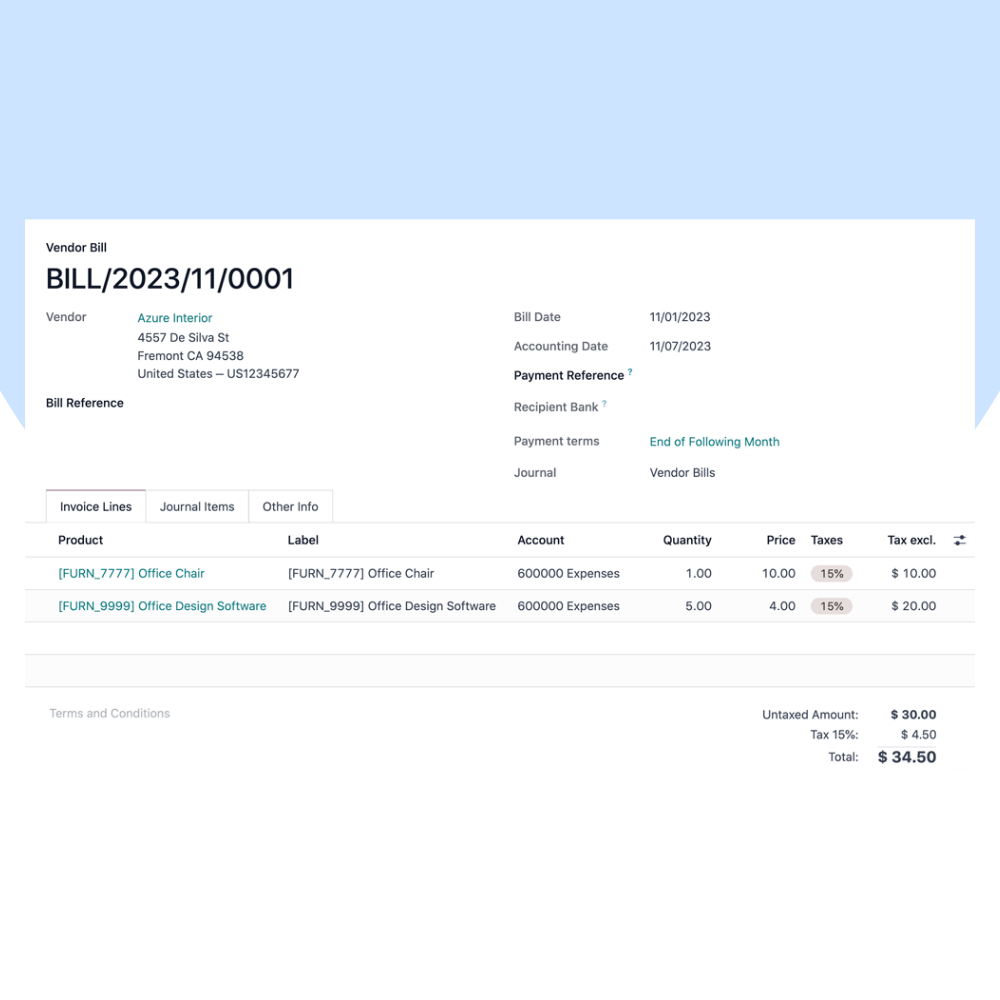
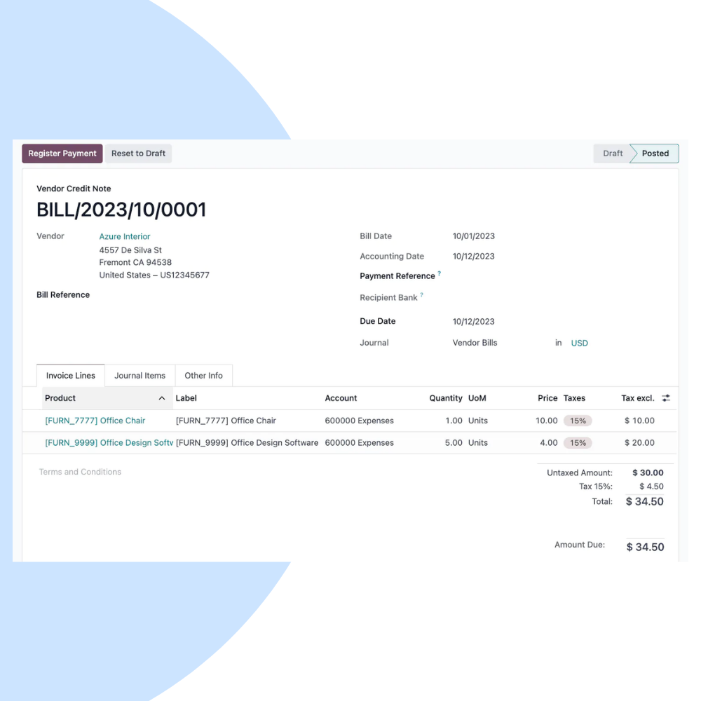
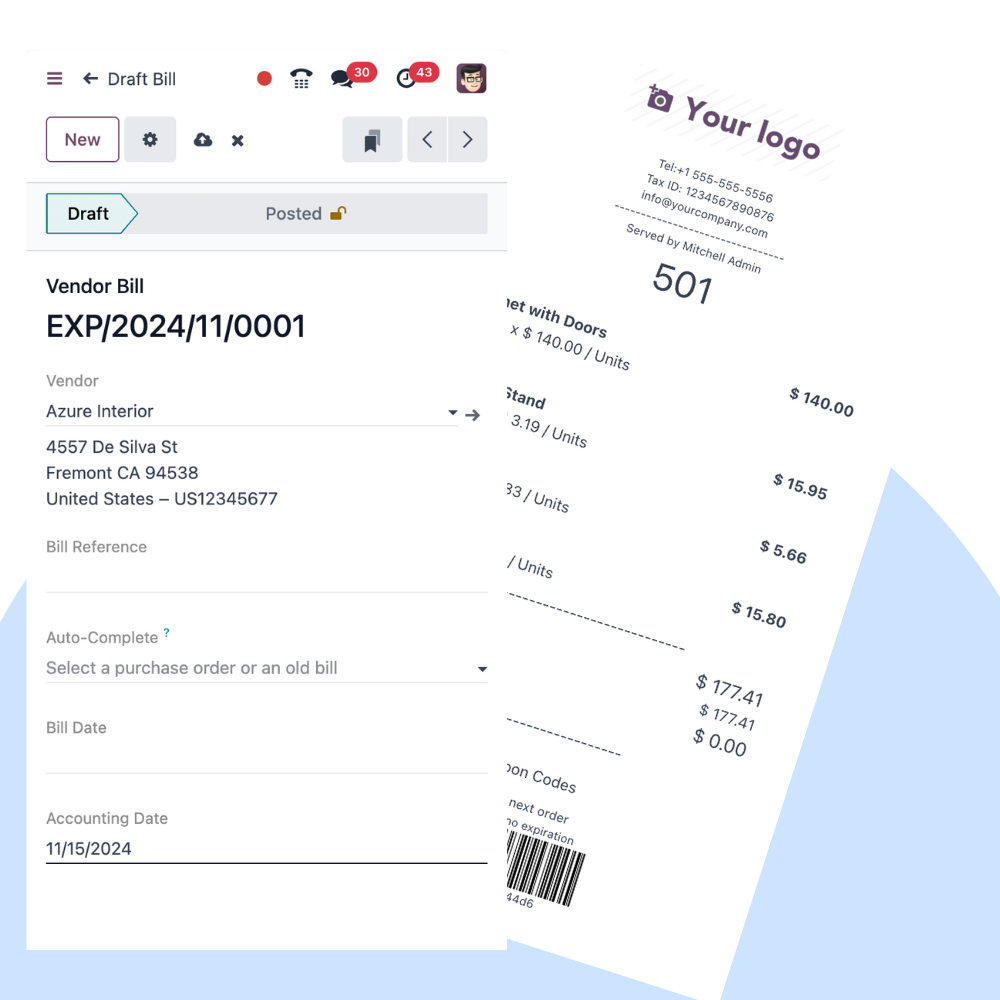

Upgrade your Odoo system with confidence. We provide secure, accurate, and hassle-free Odoo migration services to move your data, modules, and workflows to the latest version.
We assess your current Odoo environment and design a structured migration plan that minimizes risks and downtime.


Our migration experts ensure accurate data transfer, module compatibility, and system stability during migration.
Carefully planned migrations with minimal business impact.
Accurate data migration with validation and reconciliation.
Ensure custom modules work with newer Odoo versions.
Backup, rollback, and security best practices.
Comprehensive testing before go-live.
Experienced Odoo migration specialists.
After migration, we provide stabilization and support services to ensure smooth adoption of the new Odoo version.
